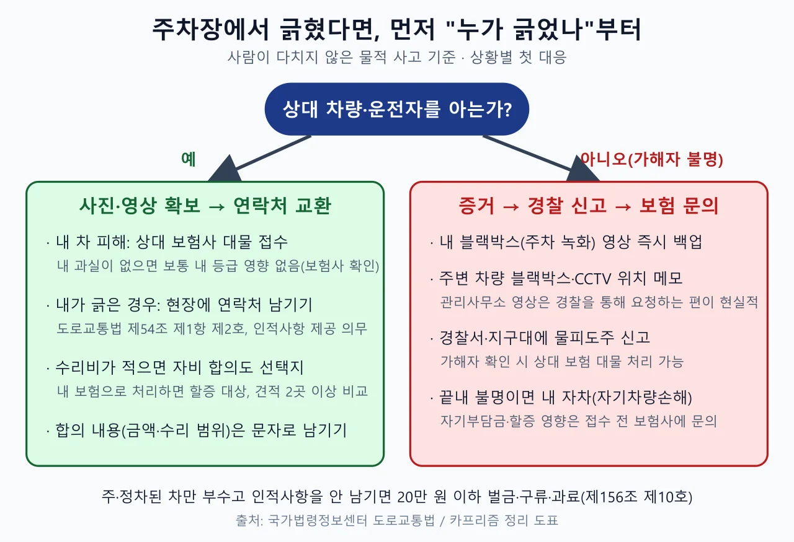
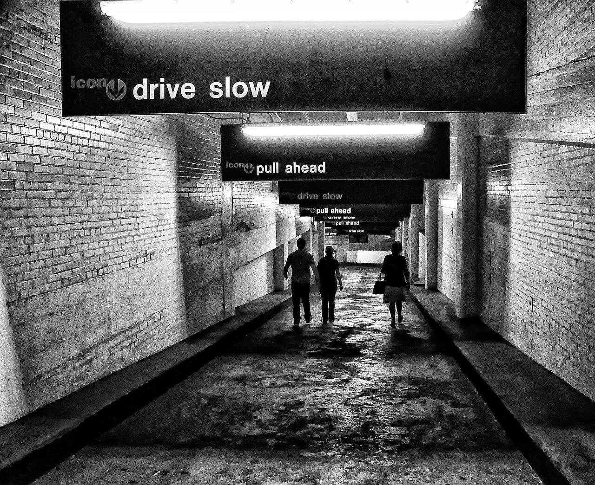
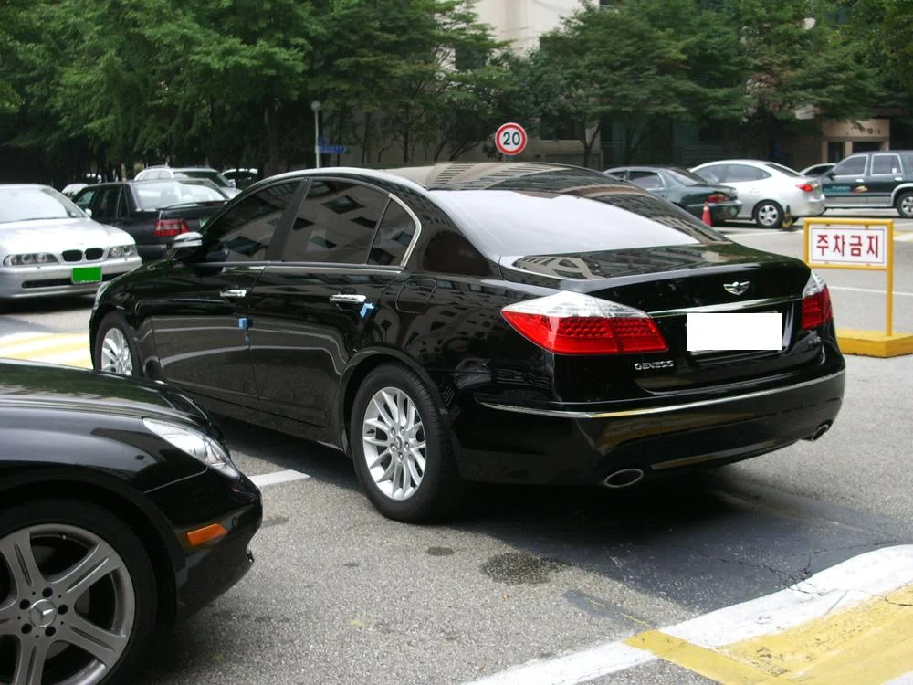
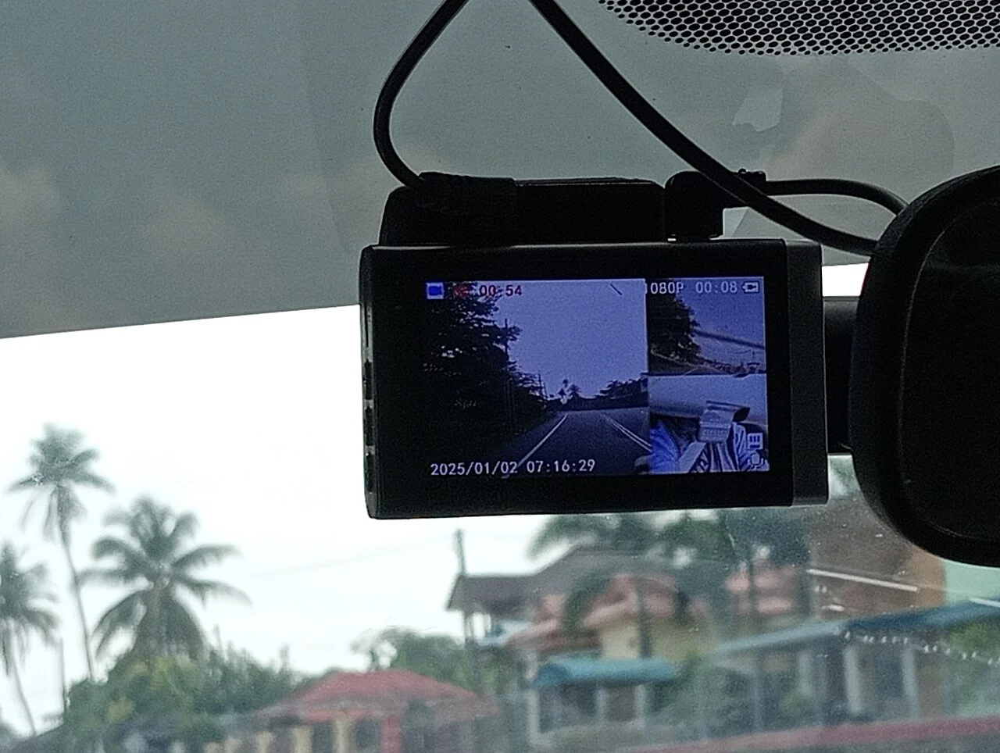
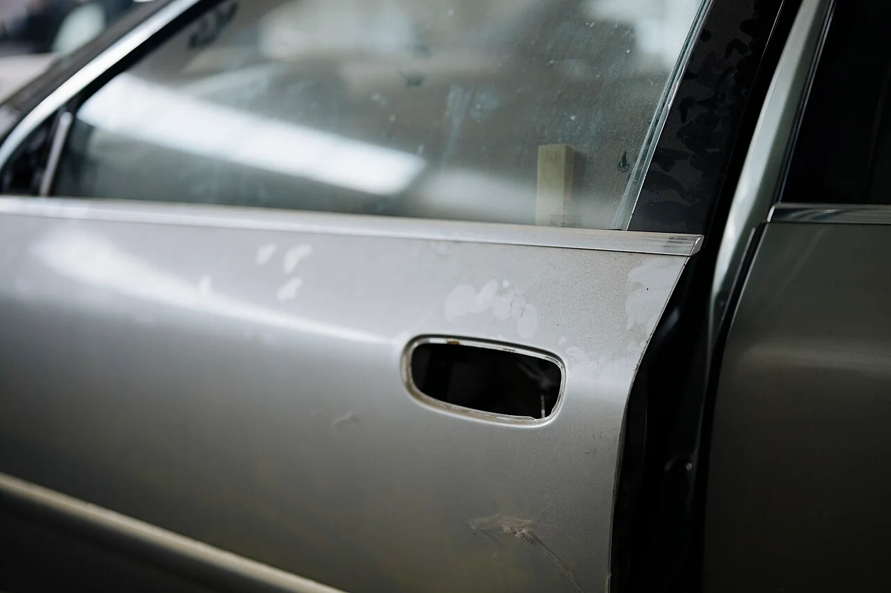
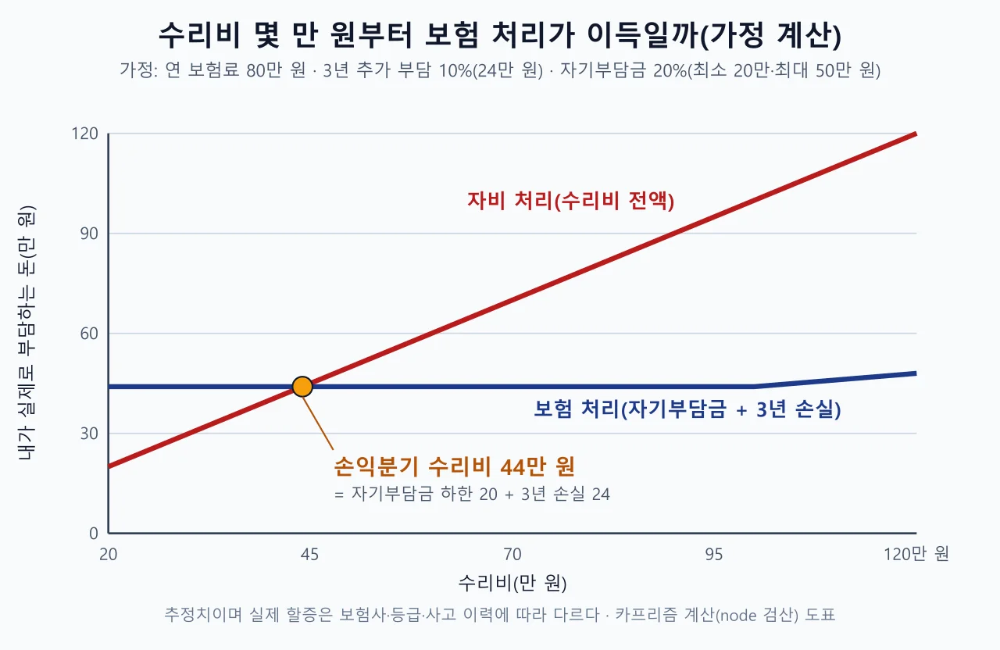
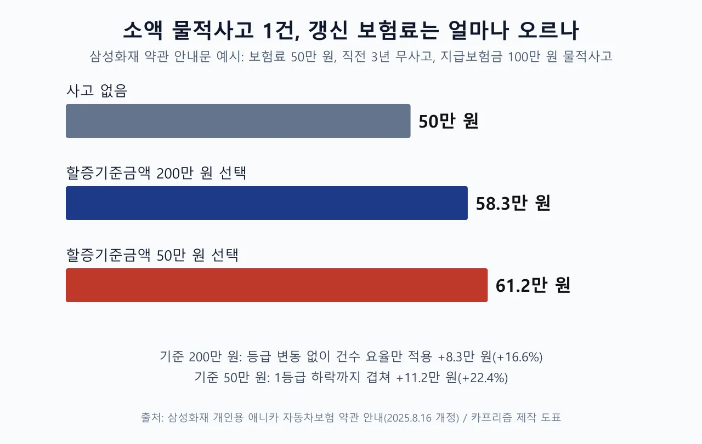

▲ 주차선을 넘어 비스듬히 선 차량(미국 주차장 사례, 번호판은 카프리즘이 모자이크 처리) — 이런 주차장에서는 문콕과 접촉이 생겨도 누가 했는지 모르는 경우가 많다 ⓒ Wikimedia Commons / Paul L Dineen (CC BY 2.0, 번호판 모자이크 가공)
"마트 지하주차장에서 돌아와 보니 문짝에 하얀 긁힌 자국이 있다." 이럴 때 많은 사람이 가장 먼저 "보험 처리할까, 그냥 내 돈으로 고칠까"를 따진다. 하지만 순서가 틀렸다. 같은 흠집이라도 긁은 사람을 아는지, 내가 긁었는지, 아무도 모르는지에 따라 쓸 수 있는 보험 담보와 해야 할 일이 달라진다. 이 글은 도로교통법 조문과 보험사 안내로 주차장 경미 사고의 대응 순서를 확인하고, 연 보험료 80만 원·3년 추가 부담 10%라는 가정으로 수리비 손익분기점을 계산했다. 사고 후 합의·과실 문제는 보험사 합의금과 과실비율 글에서, 사람이 다친 뺑소니는 뺑소니 첫 5분 글에서 다뤘다.
1. 보험 이야기보다 먼저 — '누가 긁었나'로 갈라지는 대응 순서
주차장 경미 사고는 가해자를 아는지에 따라 처리 경로가 세 갈래로 나뉜다. 상대 차량과 운전자를 알면 상대 보험의 대물배상으로 접수하는 것이 기본이고, 내가 긁은 쪽이라면 내 보험 대물 처리나 합의가 문제가 된다. 범인을 알 수 없을 때만 내 보험의 가해자 불명 보상(자차 계열)을 쓰는 선택지가 남는다. 이 담보가 기본 자차에 들어 있는지, 단독사고 특약으로 따로 가입해야 하는지는 상품마다 달라 증권으로 확인해야 한다. 아래 흐름도는 사람이 다치지 않은 물적 사고만 기준으로 했다.

▲ 상대를 아는 경우와 모르는 경우로 나눠 본 첫 대응 순서 ⓒ 카프리즘 제작 도표 (도로교통법 제54조·제156조 기준)
| 상황 | 쓰는 담보 | 내 보험 등급에 미치는 영향 |
|---|---|---|
| 상대가 긁었고 상대를 안다 | 상대 보험 대물배상 | 내 과실이 없으면 보통 영향 없음(보험사에 확인) |
| 내가 남의 차를 긁었다 | 내 보험 대물배상 또는 직접 합의 | 보험으로 처리하면 할증 대상, 합의하면 보험 기록 없음 |
| 긁은 사람을 모른다 | 가해자 불명 사고를 보상하는 내 자차 담보(삼성화재·롯데손보 약관은 '차량단독사고 특별약관' 가입 시) | 자기부담금 부담 + 사고 건수·할증 영향(아래 계산) |
| 자차나 단독사고 특약에 가입하지 않았다 | 없음(범인을 찾아야 상대 대물 가능) | 전액 자비 또는 가해자 추적 |

▲ 좁고 어두운 지하주차장 진출입로(미국 뉴욕 사례) — 사각이 많고 통행이 겹치는 곳일수록 접촉과 문콕이 생기기 쉽다 ⓒ Wikimedia Commons / Rod Waddington (CC BY-SA 2.0)
2. 내가 긁었다면 — 연락처 남기기는 '예의'가 아니라 법적 의무
주차된 차를 긁고 연락처를 남기지 않고 떠나면 사람이 다치지 않았더라도 처벌 대상이다. 국가법령정보센터의 도로교통법 제54조 제1항은 교통사고로 "물건을 손괴"한 운전자가 즉시 정차해 피해자에게 인적사항(성명·전화번호·주소)을 제공해야 한다고 정한다. 그리고 제156조 제10호는 "주·정차된 차만 손괴한 것이 분명한 경우" 인적사항을 제공하지 않은 사람을 20만 원 이하 벌금이나 구류 또는 과료에 처한다고 규정한다.

▲ 주차 구획에 세워 둔 승용차 뒷모습(국내 촬영, 번호판 가림 상태) — 주·정차된 차만 부순 경우에도 인적사항을 남기지 않으면 제156조 제10호 대상이 된다 ⓒ Wikimedia Commons / InSapphoWeTrust (CC BY-SA 2.0)
"아파트·마트 주차장은 도로가 아니지 않나"라는 반문이 흔하다. 하지만 같은 법 제2조 제26호는 '운전'을 정의하면서 제54조 제1항과 제156조 제10호의 경우에는 도로 외의 곳도 포함한다고 명시했다. 사고 후 조치 의무는 주차장에서도 똑같이 적용된다는 뜻이다. 한편 제54조 제2항의 경찰 신고 의무에는 "차만 손괴된 것이 분명하고 도로에서의 위험방지와 원활한 소통을 위하여 필요한 조치를 한 경우" 예외가 있다. 그래서 경미한 물피 사고에서 경찰 신고는 필수가 아니라 선택에 가깝지만, 인적사항 제공은 예외가 없다. 상대가 연락처를 받지 못한 채 차에 쪽지를 붙이는 방법도 있지만, 쪽지가 없어지면 입증이 어려우니 블랙박스 영상과 사진을 함께 남기는 것이 안전하다.
조문은 국가법령정보센터에서 직접 볼 수 있다. 도로교통법 바로가기
3. 내 차가 긁혔는데 범인을 모를 때 — 증거, 경찰 신고, 보험 접수 순서
가해자 불명 사고의 승부는 사고 직후 30분의 증거에서 갈린다. 카앤모어 2025년 6월 보도는 공동주택 지하주차장 같은 비공개 공간에서는 CCTV나 블랙박스 영상이 없으면 책임 소재를 가리기 어렵다고 짚으면서, 블랙박스 저장 상태·주변 CCTV 위치와 화질·사고 직후 현장 사진·출입 기록을 확인하고 경찰 신고로 기록을 남기라고 권했다. 아래 순서가 그 요지다. 보험 접수를 생각한다면 삼성화재 약관(2025.8.16 개정)과 롯데손보 약관(2024.1.9 개정)이 같은 취지로 정한 두 가지를 알아 두면 좋다. 첫째, 기본 자기차량손해는 '다른 자동차와의 충돌 및 도난'에 한정되고 가해자 불명 사고는 '차량단독사고 손해보상 특별약관'에서 다룬다. 둘째, 그 특약에서는 가해자 불명 사고도 실제 수리를 원칙으로 하며, 경미한 손상은 보험개발원이 정한 경미손상 수리기준에 따라 복원수리하거나 품질인증부품으로 교환하는 데 드는 비용을 한도로 보상한다. 긁힘 흠집은 문짝 교환·전체 도색 대신 복원 수리 비용이 기준이 될 수 있다는 뜻이다. 롯데손보 약관에는 여기에 더해, 가해자 불명을 포함한 단독사고로 보험금을 받으면서 품질인증부품으로 수리하면 OEM 부품 공시가격의 25%를 따로 지급하는 특약이 자기차량손해·단독사고 특약 가입 시 자동 적용된다고 적혀 있다. 보험사마다 다를 수 있으니 수리 전에 문의해 볼 만하다.

▲ 앞유리에 부착된 블랙박스 — 주차 중 충격 녹화 영상이 있다면 덮어 쓰이기 전에 먼저 백업해야 한다 ⓒ Wikimedia Commons / Danielrayyan09 (CC BY 4.0)
✅ 가해자 불명 긁힘, 발견 즉시 할 일 6가지
· 현장 사진·영상: 흠집 부위 근접 사진, 차량 전체와 주차 위치가 함께 보이는 사진, 바닥 선과 기둥 번호
· 내 블랙박스 영상 백업: 주차 녹화·충격 감지 영상을 SD카드에서 즉시 복사(카프리즘 블랙박스 구매 가이드 참고)
· 주변 영상 위치 메모: 주차장 CCTV, 인접 차량 블랙박스 유무
· 관리사무소 문의: 개인정보 문제로 영상을 제3자에게 바로 보여 주지 않는 경우가 많아 경찰을 통해 요청하는 편이 현실적이다(일반적 안내이며 곳곳의 관리 규정은 확인하지 못함)
· 경찰 신고: 가해자를 추적할 수 있고, 영상 제출 방법은 사고영상 제출 가이드에 정리했다
· 보험사 접수 전 문의: "이 사고를 가해자 불명 자차로 처리하면 갱신 보험료가 얼마나 오르나"를 먼저 물어본다

▲ 도장이 벗겨지고 긁힌 은색 차의 문짝 — 흠집 깊이에 따라 광택·도색 수리로 갈리고 수리비도 달라진다 ⓒ Wikimedia Commons / Shixart1985 (CC BY 2.0)
📍 "전체 도색 공짜" 제안은 조심
금융감독원은 2016년 11월 차량 흠집·긁힘을 가해자 불명 사고로 접수하게 해 보험금을 타낸 혐의자 881명을 적발했다고 발표했고, 당시 "차량 전체를 공짜로 도색해준다는 등 약관에서 보장하지 않는 제안에 현혹되지 말라"고 당부했다(이투데이 보도). 오래된 사례지만 구조는 같다. 없던 긁힘을 가해자 불명으로 접수하게 부추기는 정비업체 제안에 응하면 보험사기에 연루될 수 있다. 2025년 9월 금감원 소비자경보(경향신문 보도)도 "경미한 사고에도 허위 입원을 권유하는 브로커 제안은 거절하라"고 경고했다.
4. 수리비 계산 — 자기부담금 20만 원 하한이 만드는 손익분기점
자차로 처리하면 내가 내는 돈은 '자기부담금 + 이후 3년간 오른 보험료'이고, 자비 처리하면 수리비 전액이다. 손익분기 수리비는 둘이 같아지는 지점이다. 수식은 간단하다. 수리비를 R, 연 보험료를 P, 사고 때문에 3년간 보험료가 평소보다 r만큼 더 나온다고 가정하면, 3년 손실 L은 P×r×3이다. 자기부담금이 최소 20만 원(할증기준금액 200만 원 선택, 수리비 100만 원 미만 구간)이면 보험금은 R−20이므로 R−20>L, 즉 R>20+L일 때 보험 처리가 명목상 이득이다. 이 수식과 아래 표는 node로 다시 계산해 일치함을 확인했다.
| 수리비 | 자기부담금 | 보험으로 받는 돈 |
|---|---|---|
| 20만 원 | 20만 원 | 0만 원 |
| 30만 원 | 20만 원 | 10만 원 |
| 40만 원 | 20만 원 | 20만 원 |
| 50만 원 | 20만 원 | 30만 원 |
| 60만 원 | 20만 원 | 40만 원 |
| 80만 원 | 20만 원 | 60만 원 |
| 100만 원 | 20만 원 | 80만 원 |
| 150만 원 | 30만 원 | 120만 원 |
| 250만 원 | 50만 원 | 200만 원 |
표처럼 수리비 20만 원이면 받는 보험금은 0원이다. 수리비 30만 원이어도 10만 원을 받는 데 그친다. 자기부담금 구조는 삼성화재 개인용 자동차보험 약관 안내(2025.8.16 개정)에서 직접 확인했다. 예시 표의 전제도 "물적사고 할증기준 금액 200만 원, 자기차량손해액의 20% 가입(한도: 최소 20만 원, 최대 50만 원)"이다. 롯데손보 약관(2024.1.9 개정)의 자기부담금 표는 이 하한이 가입자가 고른 물적할증 기준금액과 짝을 이룬다고 보여 준다(20% 가입 시 상한 50만 원, 하한은 기준금액 50·100·150·200만 원에 각각 5·10·15·20만 원). 30% 가입 쪽 표는 PDF 텍스트에서 구조를 확실히 읽지 못해 쓰지 않았다. "보험증권에 기재된 최소자기부담금과 최대자기부담금을 한도로 피보험자동차에 생긴 손해액의 일정비율(20% 또는 30%)"이며, 20% 가입 예시로 손해액 500만 원이면 50만 원, 150만 원이면 30만 원, 50만 원이면 20만 원이라고 적혀 있다. 이 글의 표는 20%·최소 20만 원·최대 50만 원 가입을 기준으로 했고, 30%를 고른 가입자는 더 큰 금액을 낸다. 전부손해이거나 보상 금액이 가입금액 이상이면 자기부담금을 공제하지 않는다. 실제 비율과 상·하한은 내 증권에서 확인해야 한다.
공식이 맞는 구간도 짚어 둔다. 수리비 R이 100만 원 미만이라 자기부담금이 최소 20만 원일 때만 손익분기가 20+L이다. 3년 손실 L이 80만 원을 넘어 손익분기 수리비가 100만 원을 넘어서면 자기부담금이 손해액의 20%로 바뀌어 손익분기는 L의 1.25배(R=1.25L, 자기부담금 50만 원 상한 구간 전까지)가 된다. 아래 표의 모든 칸은 100만 원 미만이라 20+L 공식이 그대로 맞는다.
하한이 달라지면 손익분기도 달라진다. 연 보험료 80만 원·3년 손실 24만 원 가정에서 20% 가입 기준으로 계산하면 아래와 같다. 하한이 낮을수록 자비 처리가 불리해지는 수리비 기준선이 내려가지만, 기준금액을 낮게 고르면 지급보험금이 그 금액을 넘는 사고에서 등급 하락(삼성화재 안내문 기준 +5%)이 따른다는 상충이 있다. 지급보험금이 기준금액 이하인 소액 사고의 점수는 2차 자료 설명(0.5점)에 의존하므로 내 보험사의 실제 산식은 직접 확인해야 한다.
| 할증기준금액(롯데손보 약관 표) | 자기부담금 하한 | 손익분기 수리비 |
|---|---|---|
| 50만 원 | 5만 원 | 약 30만 원 (수리비 25만 원부터 20%가 하한을 넘어 0.8R=24로 계산) |
| 100만 원 | 10만 원 | 34만 원 (10+24) |
| 150만 원 | 15만 원 | 39만 원 (15+24) |
| 200만 원 | 20만 원 | 44만 원 (20+24) |

▲ 연 보험료 80만 원·3년 추가 부담 10% 가정 — 수리비 44만 원에서 두 선이 만난다 ⓒ 카프리즘 제작 도표 (가정 계산, node 검산)
| 연 보험료 | 추가 부담 5% | 추가 부담 10% | 추가 부담 15% | 추가 부담 25% |
|---|---|---|---|---|
| 60만 원 | 29만 원 (손실 9) | 38만 원 (손실 18) | 47만 원 (손실 27) | 65만 원 (손실 45) |
| 80만 원 | 32만 원 (손실 12) | 44만 원 (손실 24) | 56만 원 (손실 36) | 80만 원 (손실 60) |
| 100만 원 | 35만 원 (손실 15) | 50만 원 (손실 30) | 65만 원 (손실 45) | 95만 원 (손실 75) |
🧮 계산 예시 (연 보험료 80만 원, 추가 부담 10% = 3년 24만 원 가정)
문콕 흔적, 수리비 25만 원 — 자기부담금 20만 원, 받는 돈 5만 원. 3년 손실 24만 원이 더 크므로 자비 처리가 유리하다.
문짝 도색, 수리비 60만 원 — 자기부담금 20만 원, 받는 돈 40만 원. 3년 손실 24만 원을 빼면 명목상 16만 원 이득이다.
이 예시에는 3년 안에 사고가 한 번 더 나는 경우가 빠져 있다. 보도 기준으로 기준금액 이하 사고도 같은 해 2건이 되면 1점으로 합산되고 건수 요율에도 쌓이므로, 이미 이력이 있다면 손실이 더 커질 수 있다. 추가 부담률 10%는 카프리즘 앞선 기사의 "10~15%" 안내를 참고한 가정이다. 한편 삼성화재 약관 안내문의 예시(보험료 50만 원, 직전 3년 무사고, 지급보험금 100만 원 물적사고)는 할증기준금액 200만 원이면 58.3만 원, 50만 원이면 61.2만 원으로 올랐다고 적는다. 안내문의 구성 요소를 곱해 직접 검산하면, 무사고 할인 상실 +10%와 건수 할증 +6%가 곱해져 1.10×1.06=1.166(50만 원→58.3만 원)이고, 기준금액 50만 원 쪽은 등급 하락 +5%가 더 곱해져 1.166×1.05≈1.224(61.2만 원)로 안내문 수치와 일치한다. 앞의 경우가 +16.6%라 이 비율을 연 보험료 80만 원에 대입하면 3년 손실이 약 39.8만 원, 손익분기 수리비가 약 59.8만 원이 된다. 이 예시는 직전 3년간 사고가 없던 사람의 무사고 할인(약 10%)을 잃는 효과가 들어 있고, 이미 사고 이력이 있는 사람은 그 부분이 빠진다. 실제 값은 보험사가 내 갱신 보험료를 시뮬레이션해 줘야 알 수 있다.
같은 계산을 더 자세히 풀어 놓은 글이 보험으로 할까, 내 돈으로 할까이고, 등급·건수 구조 전체는 내 보험료가 오르는 두 개의 저울에 정리했다. 범퍼 교환까지 가는 큰 수리비 이야기는 범퍼 수리비 국산·수입 비교를 참고하면 된다.
5. 할증 구조는 어디까지 확인됐나 — 확인한 것과 못 한 것
자기부담금과 건수 요율, 가해자 불명 담보의 가입 조건은 삼성화재·롯데손보 약관 원문에서 확인했다. 가해자 불명 할인 유예의 구체 구간(30만 원 이하 1년 등)과 보험개발원 요율 기준은 공식 원문을 확인하지 못했다. 삼성화재 개인용 애니카 자동차보험 약관(2025.8.16 개정)과 롯데손보 개인용 자동차보험 약관(2024.1.9 개정) PDF를 텍스트로 추출해 읽었고, 금융감독원의 2024년 6월 분쟁사례 안내(뉴시스 보도)에서도 단독사고는 특약이 있어야 보상된다는 내용을 확인했다. 현대·DB·KB·메리츠의 약관 원문은 확인하지 못했다. 보험개발원 요율 기준서에서는 구체 수치를 찾지 못했다. 그래서 아래 표는 확인 수준을 같이 적었다. 2014년 보도가 소개한 "50만 원 이하 1등급·건수제 전환"처럼 당시 개편안에 관한 오래된 기사는 현행 기준으로 쓰지 않았다.
| 항목 | 내용 | 확인 수준 |
|---|---|---|
| 할증기준금액 | 가입 시 50·100·150·200만 원 중 선택, 이하·초과로 점수 구분. 비교 대상은 대물·자차로 지급된 보험금이며 내 자기부담금은 제외(삼성화재 약관 안내는 예시로 200만·50만 원을 듦) | 삼성화재 약관 안내문(예시)·롯데손보 약관 표·카롯손해보험 블로그·삼성화재 다이렉트·KB손보 Q&A가 일치 |
| 사고점수 | 기준금액 초과 건당 1점, 이하 건당 0.5점. 1점당 1등급 하락. 약관 안내문 예: 200만 원 선택 시 이하 1건은 기존 등급 유지, 이하 2건은 1등급 할증, 초과 1건은 1등급 할증 | 삼성화재 약관 안내문이 등급 결과를 확인해 준다. 점수 숫자(0.5·1)는 서울경제·캐롯손해보험 등 2차 자료 |
| 사고건수요율 | 사고 내용과 별개로 직전 3년간 사고 유무와 건수에 따라 적용하는 요율. 직전 3년 무사고면 할인율 적용, 물적사고는 등급 변동이 없어도 이 요율로 할증될 수 있다 | 삼성화재 약관 안내문 원문 확인 |
| 가해자 불명 자차 특례 | 롯데손보 약관은 사고 시 할인할증 등급이 내려가며 "1년 또는 3년간 할인등급으로 이동이 유예될 수 있다"고 설명한다(가해자 불명 한정 설명은 아님). 경향신문 2013년 보도는 보험사들이 가해자 불명 사고에 할증을 하지 않고 보험사마다 다른 기간 동안 할인을 유예한다고 전했다. '손해액 30만 원 이하 1년, 초과~할증기준금액 이하 3년'이라는 구체 구간은 보험 커뮤니티 글에서만 확인된다. 이전 글에 쓴 '50만 원 구간'은 근거를 찾지 못했다 | 유예 제도의 존재는 약관 설명(롯데손보)과 2013년 보도로 확인, 구체 구간·보험사별 차이는 공식 원문 미확인. 접수 전 보험사에 문의 |
| 자기부담금 | 손해액 20% 또는 30%, 최소·최대 한도(증권 기재). 삼성화재 예시는 하한 20만·상한 50만 원(기준금액 200만 원, 20%), 롯데손보 표는 20% 가입 시 상한 50만 원·하한 5~20만 원(기준금액 50~200만 원 연동) | 삼성화재 약관 안내문·롯데손보 약관 원문 확인, KB손보 Q&A와 일치. 30% 가입 표 구조는 읽지 못함 |
| 가해자 불명 담보 | 기본 자기차량손해는 차대차·도난에 한정, 가해자·가해차량 불명과 단독사고는 '차량단독사고 손해보상 특별약관' 가입 시 보상 | 삼성화재·롯데손보 약관 원문과 금감원 안내(2024.6)가 같은 취지. 현대·DB·KB·메리츠는 약관 원문 미확인 |
| 보험료 증가율(등급당·건당 %) | 삼성화재 약관 안내문 예시: 무사고 할인 상실 +10%, 사고건수 할증 +6%, 기준금액 50만 원이면 1등급 하락 +5%가 더해짐(개인별 상이) | 예시값은 곱셈 검산으로 안내문 수치와 일치(1.10×1.06=1.166, ×1.05≈1.224). 개인별 적용률은 미확인이라 계산에는 가정값과 예시값을 병기 |

▲ 삼성화재 약관 안내문 예시 — 보험료 50만 원, 직전 3년 무사고, 지급보험금 100만 원 사고 1건 ⓒ 카프리즘 제작 도표 (삼성화재 약관 안내문 예시 수치, 개인별 상이)
사고점수와 건수 요율이 내 보험에 실제로 어떻게 적용됐는지는 손해보험협회가 운영하는 자동차보험 종합포털에서 "자동차 보험료 할인·할증요인 조회" 메뉴로 확인할 수 있다고 안내돼 있다(메뉴명 기준, 세부 경로 확인 못 함). 자동차보험 종합포털 바로가기
6. 보험사에 전화하기 전, 이것만 물어보자
접수하기 전에 보험사에 물어볼 질문을 정해 두면 불필요한 할증 기록을 피할 수 있다. 일반적으로 사고 접수와 보험금 지급은 다른 단계라고 안내되지만, 접수 후 철회가 가능한지와 기록이 남는지는 보험사마다 다를 수 있어 직접 확인해야 한다.
✅ 보험사 상담 질문 4가지
· "이 사고를 자차(가해자 불명)로 처리하면 갱신 보험료가 얼마나 오릅니까?": 내 연 보험료·등급 기준 예상 금액을 요청한다
· "접수만 하고 처리를 철회하면 사고 기록이 남습니까?": 지급 전 취소 시 기록 여부는 일부 보험사 안내만 확인했을 뿐 일반 규정으로 확인하지 못했다
· "제 물적사고 할증기준금액은 얼마이고, 자기부담금 하한은 얼마입니까?": 기준금액은 증권에 적힌 50·100·150·200만 원 중 하나이고, 롯데손보 약관 표에서는 이에 따라 하한이 달라진다. 수리비 견적은 최소 2곳에서 받는다
· "가해자 불명 사고도 보상되는 담보(차량단독사고 특약 등)에 가입돼 있습니까?": 가입하지 않았다면 자차 접수 자체가 불가능할 수 있다
마지막으로, 사람이 다치지 않은 경미한 사고라도 합의금이나 병원비 이야기가 나오면 혼자 판단하지 말고 보험사와 상의해야 한다. 경미한 접촉을 이유로 허위 입원을 권유하는 브로커 제안은 거절해야 한다는 것이 금융감독원 소비자경보(2025.9, 경향신문 보도)의 요지다.
7. 요약
주차장에서 긁혔다면 보험보다 먼저 '누가 긁었나'를 가려야 한다. 상대를 알면 상대 보험 대물, 내가 긁었다면 연락처를 남겨야 하고(주·정차된 차만 손괴해도 제156조 제10호, 주차장 포함), 모르면 블랙박스·CCTV 증거 확보와 경찰 신고 뒤 자차 접수를 검토한다.
자차는 자기부담금(약관상 손해액 20% 또는 30%, 삼성화재 예시는 최소 20만 원·최대 50만 원이며 롯데손보 표는 하한이 할증기준금액에 연동)이 있어 수리비가 작으면 받는 돈이 거의 없다. 가해자 불명 사고는 기본 자차가 아니라 단독사고 특약 가입 여부부터 확인해야 한다(삼성화재 약관 기준). 연 보험료 80만 원·3년 추가 부담 10%를 가정하면 손익분기 수리비는 44만 원이고, 삼성화재 예시 비율(16.6%)을 쓰면 약 60만 원이다. 수식은 20만 원+연 보험료×추가 부담률×3년이다. 이 숫자는 가정이고, 가해자 불명 할인 유예 구간은 공식 원문을 확인하지 못했으니 접수 전 보험사에 내 조건으로 물어봐야 한다.